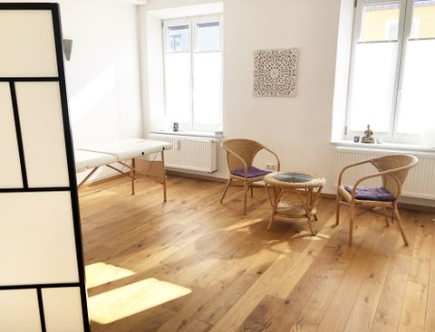
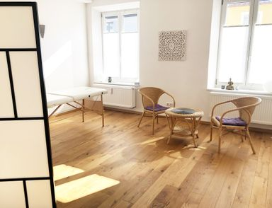

Folgende Ausbildungen bilden die Grundlage meines Angebots und zeugen von meinem Engagement für eine fundierte, ganzheitliche Behandlung.
Ausbildung bei Rainer Kern (grundlegende Ausbildung und viszerale Craniosacraltherapie) am Craniosacralseminar München (Okt. 2018 – Sept. 2019 / Juni & Sept. 2021).
Ausbildung an den Paracelsusschulen München/Augsburg mit den Inhalten: Autogenes Training, Progressive Muskelentspannung, Meditationen, Phantasiereisen, Qi-Gong und Klangschalenmassage.
Ausbildung am Heilpraktikerinstitut Lotz mit den Schwerpunkten: Kiefergelenksbehandlung (R.E.S.E.T), Chakrentherapie, Meridianbalance, Quantenheilung und energetische Rückenbehandlung (Nov. 2016 – Juni 2016).
Ausbildung am Heilpraktikerinstitut Lotz (Okt.–Nov. 2015).

